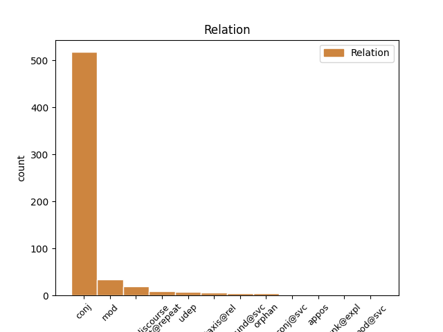
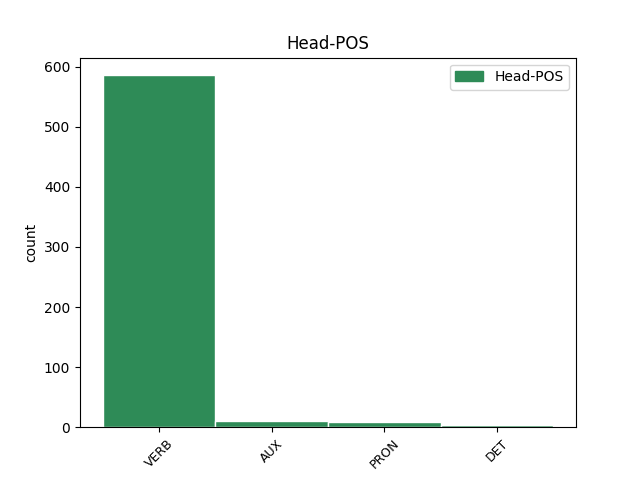
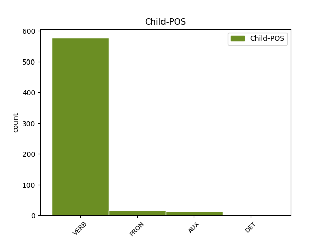

Distribution of features within this leaf



Agreement Rules sorted by frequency.
- When the dependent token is the conjunct(conj) of the head token, and the dependent token is VERB.
1 Показ _ _ _ _ 0 _ _ _
2 в _ _ _ _ 0 _ _ _
3 Україні _ _ _ _ 0 _ _ _
4 тривав _ _ _ _ 0 _ _ _
5 7 _ _ _ _ 0 _ _ _
6 тижнів _ _ _ _ 0 _ _ _
7 і _ _ _ _ 0 _ _ _
8 завершився _ _ _ _ 0 _ _ _
9 8 _ _ _ _ 0 _ _ _
10 листопада _ _ _ _ 0 _ _ _
11 2015 _ _ _ _ 0 _ _ _
12 року _ _ _ _ 0 _ _ _
13 , _ _ _ _ 0 _ _ _
14 за _ _ _ _ 0 _ _ _
15 час _ _ _ _ 0 _ _ _
16 прокату _ _ _ _ 0 _ _ _
17 було _ _ _ _ 0 _ _ _
18 продано продати VERB Vmeo Aspect=Perf|Mood=Ind|Person=0|VerbForm=Fin 0 _ _ _
19 442 509 _ _ _ _ 0 _ _ _
20 квитків _ _ _ _ 0 _ _ _
21 та _ _ _ _ 0 _ _ _
22 зібрано зібрати VERB Vmeo Aspect=Perf|Mood=Ind|Person=0|VerbForm=Fin 18 conj _ Id=39qb|LTranslit=zibraty|Translit=zibrano
23 29 037 892 _ _ _ _ 0 _ _ _
24 ₴ _ _ _ _ 0 _ _ _
25 , _ _ _ _ 0 _ _ _
26 або _ _ _ _ 0 _ _ _
27 ж _ _ _ _ 0 _ _ _
28 1,357,145 _ _ _ _ 0 _ _ _
29 $ _ _ _ _ 0 _ _ _
30 . _ _ _ _ 0 _ _ _
1 Ви _ _ _ _ 0 _ _ _
2 ж _ _ _ _ 0 _ _ _
3 самі _ _ _ _ 0 _ _ _
4 розумієте _ _ _ _ 0 _ _ _
5 , _ _ _ _ 0 _ _ _
6 що _ _ _ _ 0 _ _ _
7 робиться робитися VERB Vmpip3s Aspect=Imp|Mood=Ind|Number=Sing|Person=3|Tense=Pres|VerbForm=Fin 0 _ _ _
8 з _ _ _ _ 0 _ _ _
9 браконьєром _ _ _ _ 0 _ _ _
10 , _ _ _ _ 0 _ _ _
11 коли _ _ _ _ 0 _ _ _
12 він _ _ _ _ 0 _ _ _
13 почує почути VERB Vmeif3s Aspect=Perf|Mood=Ind|Number=Sing|Person=3|Tense=Fut|VerbForm=Fin 7 mod _ Id=339j|LTranslit=počuty|Translit=počuě
14 " _ _ _ _ 0 _ _ _
15 стій _ _ _ _ 0 _ _ _
16 ! _ _ _ _ 0 _ _ _
17 " _ _ _ _ 0 _ _ _
1 Дебата _ _ _ _ 0 _ _ _
2 буде бути AUX Vapif3s Aspect=Imp|Mood=Ind|Number=Sing|Person=3|Tense=Fut|VerbForm=Fin 0 _ _ _
3 , _ _ _ _ 0 _ _ _
4 розуміється розумітися VERB Vmpip3s Aspect=Imp|Mood=Ind|Number=Sing|Person=3|Tense=Pres|VerbForm=Fin 2 parataxis@discourse _ Id=22ok|LTranslit=rozumityśа|SpaceAfter=No|Translit=rozumiěťśа
5 , _ _ _ _ 0 _ _ _
6 при _ _ _ _ 0 _ _ _
7 закритих _ _ _ _ 0 _ _ _
8 дверях _ _ _ _ 0 _ _ _
9 . _ _ _ _ 0 _ _ _
1 І _ _ _ _ 0 _ _ _
2 видно _ _ _ _ 0 _ _ _
3 всі _ _ _ _ 0 _ _ _
4 сузір'я _ _ _ _ 0 _ _ _
5 , _ _ _ _ 0 _ _ _
6 всі _ _ _ _ 0 _ _ _
7 туманності _ _ _ _ 0 _ _ _
8 , _ _ _ _ 0 _ _ _
9 які _ _ _ _ 0 _ _ _
10 падають падати VERB Vmpip3p Aspect=Imp|Mood=Ind|Number=Plur|Person=3|Tense=Pres|VerbForm=Fin 0 _ _ _
11 , _ _ _ _ 0 _ _ _
12 падають падати VERB Vmpip3p Aspect=Imp|Mood=Ind|Number=Plur|Person=3|Tense=Pres|VerbForm=Fin 10 flat@repeat _ Id=2plc|LTranslit=padaty|Translit=padajuť
13 на _ _ _ _ 0 _ _ _
14 тебе _ _ _ _ 0 _ _ _
1 Так _ _ _ _ 0 _ _ _
2 , _ _ _ _ 0 _ _ _
3 вона _ _ _ _ 0 _ _ _
4 швидко _ _ _ _ 0 _ _ _
5 піде піти VERB Vmeif3s Aspect=Perf|Mood=Ind|Number=Sing|Person=3|Tense=Fut|VerbForm=Fin 0 _ _ _
6 в _ _ _ _ 0 _ _ _
7 Харківському _ _ _ _ 0 _ _ _
8 Держтеатрі _ _ _ _ 0 _ _ _
9 " _ _ _ _ 0 _ _ _
10 Березіль _ _ _ _ 0 _ _ _
11 " _ _ _ _ 0 _ _ _
12 і _ _ _ _ 0 _ _ _
13 одночасно _ _ _ _ 0 _ _ _
14 буде бути AUX Vapif3s Aspect=Imp|Mood=Ind|Number=Sing|Person=3|Tense=Fut|VerbForm=Fin 5 conj _ Id=2vfz|LTranslit=buty|Translit=bude
15 друкуватися _ _ _ _ 0 _ _ _
16 , _ _ _ _ 0 _ _ _
17 у _ _ _ _ 0 _ _ _
18 журналі _ _ _ _ 0 _ _ _
19 Вільної _ _ _ _ 0 _ _ _
20 Академії _ _ _ _ 0 _ _ _
21 Пролетарської _ _ _ _ 0 _ _ _
22 Літератури _ _ _ _ 0 _ _ _
23 — _ _ _ _ 0 _ _ _
24 " _ _ _ _ 0 _ _ _
25 Вапліте _ _ _ _ 0 _ _ _
26 " _ _ _ _ 0 _ _ _
27 , _ _ _ _ 0 _ _ _
28 де _ _ _ _ 0 _ _ _
29 разом _ _ _ _ 0 _ _ _
30 з _ _ _ _ 0 _ _ _
31 нею _ _ _ _ 0 _ _ _
32 ти _ _ _ _ 0 _ _ _
33 можеш _ _ _ _ 0 _ _ _
34 почитати _ _ _ _ 0 _ _ _
35 прекрасний _ _ _ _ 0 _ _ _
36 новий _ _ _ _ 0 _ _ _
37 роман _ _ _ _ 0 _ _ _
38 " _ _ _ _ 0 _ _ _
39 Вальдшнепи _ _ _ _ 0 _ _ _
40 " _ _ _ _ 0 _ _ _
41 Миколи _ _ _ _ 0 _ _ _
42 Хвильового _ _ _ _ 0 _ _ _
43 , _ _ _ _ 0 _ _ _
44 якого _ _ _ _ 0 _ _ _
45 ти _ _ _ _ 0 _ _ _
46 вже _ _ _ _ 0 _ _ _
47 давно _ _ _ _ 0 _ _ _
48 знаєш _ _ _ _ 0 _ _ _
49 і _ _ _ _ 0 _ _ _
50 любиш _ _ _ _ 0 _ _ _
51 . _ _ _ _ 0 _ _ _
1 Тому _ _ _ _ 0 _ _ _
2 весь _ _ _ _ 0 _ _ _
3 сенс _ _ _ _ 0 _ _ _
4 мого _ _ _ _ 0 _ _ _
5 існування _ _ _ _ 0 _ _ _
6 полягав _ _ _ _ 0 _ _ _
7 у _ _ _ _ 0 _ _ _
8 тому _ _ _ _ 0 _ _ _
9 , _ _ _ _ 0 _ _ _
10 аби _ _ _ _ 0 _ _ _
11 нізащо _ _ _ _ 0 _ _ _
12 не _ _ _ _ 0 _ _ _
13 стати _ _ _ _ 0 _ _ _
14 серйозним _ _ _ _ 0 _ _ _
15 членом _ _ _ _ 0 _ _ _
16 суспільства _ _ _ _ 0 _ _ _
17 , _ _ _ _ 0 _ _ _
18 не _ _ _ _ 0 _ _ _
19 бути _ _ _ _ 0 _ _ _
20 відмінником _ _ _ _ 0 _ _ _
21 , _ _ _ _ 0 _ _ _
22 не _ _ _ _ 0 _ _ _
23 отримати _ _ _ _ 0 _ _ _
24 червоного _ _ _ _ 0 _ _ _
25 диплома _ _ _ _ 0 _ _ _
26 і _ _ _ _ 0 _ _ _
27 не _ _ _ _ 0 _ _ _
28 опинитися _ _ _ _ 0 _ _ _
29 на _ _ _ _ 0 _ _ _
30 дошці _ _ _ _ 0 _ _ _
31 пошани _ _ _ _ 0 _ _ _
32 : _ _ _ _ 0 _ _ _
33 « _ _ _ _ 0 _ _ _
34 Ними вони PRON Pp-3--pin Case=Ins|Number=Plur|Person=3|PronType=Prs 35 udep _ Id=26ai|LTranslit=vony|Translit=Nymy
35 пишається пишатися VERB Vmpip3s Aspect=Imp|Mood=Ind|Number=Sing|Person=3|Tense=Pres|VerbForm=Fin 0 _ _ _
36 наше _ _ _ _ 0 _ _ _
37 місто _ _ _ _ 0 _ _ _
38 » _ _ _ _ 0 _ _ _
39 . _ _ _ _ 0 _ _ _
1 68 _ _ _ _ 0 _ _ _
2 паркомісць _ _ _ _ 0 _ _ _
3 можуть могти VERB Vmpip3p Aspect=Imp|Mood=Ind|Number=Plur|Person=3|Tense=Pres|VerbForm=Fin 0 _ _ _
4 приносити _ _ _ _ 0 _ _ _
5 йому _ _ _ _ 0 _ _ _
6 340 _ _ _ _ 0 _ _ _
7 грн _ _ _ _ 0 _ _ _
8 на _ _ _ _ 0 _ _ _
9 годину _ _ _ _ 0 _ _ _
10 , _ _ _ _ 0 _ _ _
11 що _ _ _ _ 0 _ _ _
12 за _ _ _ _ 0 _ _ _
13 умови _ _ _ _ 0 _ _ _
14 , _ _ _ _ 0 _ _ _
15 приміром _ _ _ _ 0 _ _ _
16 , _ _ _ _ 0 _ _ _
17 8-годинної _ _ _ _ 0 _ _ _
18 повної _ _ _ _ 0 _ _ _
19 завантаженості _ _ _ _ 0 _ _ _
20 на _ _ _ _ 0 _ _ _
21 день _ _ _ _ 0 _ _ _
22 ( _ _ _ _ 0 _ _ _
23 що _ _ _ _ 0 _ _ _
24 цілком _ _ _ _ 0 _ _ _
25 ймовірно _ _ _ _ 0 _ _ _
26 , _ _ _ _ 0 _ _ _
27 адже _ _ _ _ 0 _ _ _
28 зазвичай _ _ _ _ 0 _ _ _
29 вдень _ _ _ _ 0 _ _ _
30 на _ _ _ _ 0 _ _ _
31 цих _ _ _ _ 0 _ _ _
32 парковках _ _ _ _ 0 _ _ _
33 немає _ _ _ _ 0 _ _ _
34 вільних _ _ _ _ 0 _ _ _
35 місць _ _ _ _ 0 _ _ _
36 ) _ _ _ _ 0 _ _ _
37 даватиме давати VERB Vmpif3s Aspect=Imp|Mood=Ind|Number=Sing|Person=3|Tense=Fut|VerbForm=Fin 3 parataxis@rel _ Id=2rcy|LTranslit=davaty|Translit=davatyme
38 дохід _ _ _ _ 0 _ _ _
39 2720 _ _ _ _ 0 _ _ _
40 грн _ _ _ _ 0 _ _ _
41 , _ _ _ _ 0 _ _ _
42 у _ _ _ _ 0 _ _ _
43 місяць _ _ _ _ 0 _ _ _
44 це _ _ _ _ 0 _ _ _
45 становитиме _ _ _ _ 0 _ _ _
46 81 _ _ _ _ 0 _ _ _
47 , _ _ _ _ 0 _ _ _
48 6 _ _ _ _ 0 _ _ _
49 тис _ _ _ _ 0 _ _ _
50 . _ _ _ _ 0 _ _ _
51 грн _ _ _ _ 0 _ _ _
52 , _ _ _ _ 0 _ _ _
53 а _ _ _ _ 0 _ _ _
54 на _ _ _ _ 0 _ _ _
55 рік _ _ _ _ 0 _ _ _
56 979 _ _ _ _ 0 _ _ _
57 , _ _ _ _ 0 _ _ _
58 2 _ _ _ _ 0 _ _ _
59 тис _ _ _ _ 0 _ _ _
60 . _ _ _ _ 0 _ _ _
61 грн _ _ _ _ 0 _ _ _
62 . _ _ _ _ 0 _ _ _
1 — _ _ _ _ 0 _ _ _
2 Та _ _ _ _ 0 _ _ _
3 це _ _ _ _ 0 _ _ _
4 я _ _ _ _ 0 _ _ _
5 , _ _ _ _ 0 _ _ _
6 — _ _ _ _ 0 _ _ _
7 каже _ _ _ _ 0 _ _ _
8 , _ _ _ _ 0 _ _ _
9 — _ _ _ _ 0 _ _ _
10 прийшов _ _ _ _ 0 _ _ _
11 до _ _ _ _ 0 _ _ _
12 тебе _ _ _ _ 0 _ _ _
13 просить _ _ _ _ 0 _ _ _
14 конячки _ _ _ _ 0 _ _ _
15 , _ _ _ _ 0 _ _ _
16 нема _ _ _ _ 0 _ _ _
17 чим _ _ _ _ 0 _ _ _
18 і _ _ _ _ 0 _ _ _
19 протопить _ _ _ _ 0 _ _ _
20 , _ _ _ _ 0 _ _ _
21 поїду поїхати VERB Vmeif1s Aspect=Perf|Mood=Ind|Number=Sing|Person=1|Tense=Fut|VerbForm=Fin 0 _ _ _
22 в _ _ _ _ 0 _ _ _
23 ліс _ _ _ _ 0 _ _ _
24 та _ _ _ _ 0 _ _ _
25 назбираю назбирати VERB Vmeif1s Aspect=Perf|Mood=Ind|Number=Sing|Person=1|Tense=Fut|VerbForm=Fin 21 conj@svc _ Id=0cyo|LTranslit=nazbyraty|Translit=nazbyraju
26 хмизу _ _ _ _ 0 _ _ _
27 . _ _ _ _ 0 _ _ _
1 А _ _ _ _ 0 _ _ _
2 вона вона PRON Pp-3f-snn Case=Nom|Gender=Fem|Number=Sing|Person=3|PronType=Prs 0 _ _ _
3 йому він PRON Pp-3m-sdn Case=Dat|Gender=Masc|Number=Sing|Person=3|PronType=Prs 2 orphan _ Id=0cc1|LTranslit=vin|SpaceAfter=No|Translit=jomu
4 : _ _ _ _ 0 _ _ _
1 На _ _ _ _ 0 _ _ _
2 блокпосту _ _ _ _ 0 _ _ _
3 « _ _ _ _ 0 _ _ _
4 сепарів _ _ _ _ 0 _ _ _
5 » _ _ _ _ 0 _ _ _
6 спробуй спробувати VERB Vmem-2s Aspect=Perf|Mood=Imp|Number=Sing|Person=2|VerbForm=Fin 0 _ _ _
7 таке _ _ _ _ 0 _ _ _
8 ляпни ляпнути VERB Vmem-2s Aspect=Perf|Mood=Imp|Number=Sing|Person=2|VerbForm=Fin 6 compound@svc _ Id=39u5|LTranslit=ľаpnuty|SpaceAfter=No|Translit=ľаpny
9 ... _ _ _ _ 0 _ _ _
1 Припускаю _ _ _ _ 0 _ _ _
2 ( _ _ _ _ 0 _ _ _
3 поки _ _ _ _ 0 _ _ _
4 не _ _ _ _ 0 _ _ _
5 доведено _ _ _ _ 0 _ _ _
6 протилежне _ _ _ _ 0 _ _ _
7 ) _ _ _ _ 0 _ _ _
8 , _ _ _ _ 0 _ _ _
9 що _ _ _ _ 0 _ _ _
10 автори _ _ _ _ 0 _ _ _
11 їх _ _ _ _ 0 _ _ _
12 просто _ _ _ _ 0 _ _ _
13 " _ _ _ _ 0 _ _ _
14 не _ _ _ _ 0 _ _ _
15 бачать бачити VERB Vmpip3p Aspect=Imp|Mood=Ind|Number=Plur|Person=3|Tense=Pres|VerbForm=Fin 0 _ _ _
16 " _ _ _ _ 0 _ _ _
17 - _ _ _ _ 0 _ _ _
18 не _ _ _ _ 0 _ _ _
19 виокремлюють виокремлювати VERB Vmpip3p Aspect=Imp|Mood=Ind|Number=Plur|Person=3|Tense=Pres|VerbForm=Fin 15 appos _ Id=2b4y|LTranslit=vyokremľuvaty|Translit=vyokremľujuť
20 із _ _ _ _ 0 _ _ _
21 дискурсу _ _ _ _ 0 _ _ _
22 , _ _ _ _ 0 _ _ _
23 яким _ _ _ _ 0 _ _ _
24 послуговуються _ _ _ _ 0 _ _ _
25 . _ _ _ _ 0 _ _ _
1 Часто _ _ _ _ 0 _ _ _
2 випадає _ _ _ _ 0 _ _ _
3 чути _ _ _ _ 0 _ _ _
4 , _ _ _ _ 0 _ _ _
5 що _ _ _ _ 0 _ _ _
6 він він PRON Pp-3m-snn Case=Nom|Gender=Masc|Number=Sing|Person=3|PronType=Prs 0 _ _ _
7 чи _ _ _ _ 0 _ _ _
8 вона вона PRON Pp-3f-snn Case=Nom|Gender=Fem|Number=Sing|Person=3|PronType=Prs 6 conj _ Id=1cud|LTranslit=vona|Translit=vona
9 сказали _ _ _ _ 0 _ _ _
10 щось _ _ _ _ 0 _ _ _
11 таке _ _ _ _ 0 _ _ _
12 , _ _ _ _ 0 _ _ _
13 чого _ _ _ _ 0 _ _ _
14 зась _ _ _ _ 0 _ _ _
15 , _ _ _ _ 0 _ _ _
16 не _ _ _ _ 0 _ _ _
17 можна _ _ _ _ 0 _ _ _
18 взяти _ _ _ _ 0 _ _ _
19 назад _ _ _ _ 0 _ _ _
20 , _ _ _ _ 0 _ _ _
21 і _ _ _ _ 0 _ _ _
22 ті _ _ _ _ 0 _ _ _
23 слова _ _ _ _ 0 _ _ _
24 все _ _ _ _ 0 _ _ _
25 - _ _ _ _ 0 _ _ _
26 все _ _ _ _ 0 _ _ _
27 попотрощили _ _ _ _ 0 _ _ _
28 поміж _ _ _ _ 0 _ _ _
29 ними _ _ _ _ 0 _ _ _
30 . _ _ _ _ 0 _ _ _
1 Ждала _ _ _ _ 0 _ _ _
2 вона _ _ _ _ 0 _ _ _
3 , _ _ _ _ 0 _ _ _
4 ждала _ _ _ _ 0 _ _ _
5 , _ _ _ _ 0 _ _ _
6 далі _ _ _ _ 0 _ _ _
7 дума _ _ _ _ 0 _ _ _
8 : _ _ _ _ 0 _ _ _
9 « _ _ _ _ 0 _ _ _
10 Піду піти VERB Vmeif1s Aspect=Perf|Mood=Ind|Number=Sing|Person=1|Tense=Fut|VerbForm=Fin 0 _ _ _
11 подивлюсь подивитися VERB Vmeif1s Aspect=Perf|Mood=Ind|Number=Sing|Person=1|Tense=Fut|VerbForm=Fin 10 mod@svc _ Id=0awt|LTranslit=podyvytyśа|SpaceAfter=No|Translit=podyvľuś
12 , _ _ _ _ 0 _ _ _
13 де _ _ _ _ 0 _ _ _
14 він _ _ _ _ 0 _ _ _
15 » _ _ _ _ 0 _ _ _
16 . _ _ _ _ 0 _ _ _
1 — _ _ _ _ 0 _ _ _
2 Оце _ _ _ _ 0 _ _ _
3 вже _ _ _ _ 0 _ _ _
4 не _ _ _ _ 0 _ _ _
5 жарти _ _ _ _ 0 _ _ _
6 : _ _ _ _ 0 _ _ _
7 хто _ _ _ _ 0 _ _ _
8 його воно PRON Pp-3n-san Case=Acc|Gender=Neut|Number=Sing|Person=3|PronType=Prs 9 unk@expl _ Id=0fgv|LTranslit=vono|Translit=joho
9 знає знати VERB Vmpip3s Aspect=Imp|Mood=Ind|Number=Sing|Person=3|Tense=Pres|VerbForm=Fin 0 _ _ _
10 , _ _ _ _ 0 _ _ _
11 як _ _ _ _ 0 _ _ _
12 того _ _ _ _ 0 _ _ _
13 золотого _ _ _ _ 0 _ _ _
14 зайця _ _ _ _ 0 _ _ _
15 зловити _ _ _ _ 0 _ _ _
16 . _ _ _ _ 0 _ _ _
1 Це _ _ _ _ 0 _ _ _
2 ж _ _ _ _ 0 _ _ _
3 її її DET Pps3f-sna Case=Nom|Gender=Fem|Number=Sing|Person=3|Poss=Yes|PronType=Prs|Uninflect=Yes 0 _ _ _
4 , _ _ _ _ 0 _ _ _
5 а _ _ _ _ 0 _ _ _
6 не _ _ _ _ 0 _ _ _
7 його його DET Pps3f-sna Case=Nom|Gender=Fem|Number=Sing|Person=3|Poss=Yes|PronType=Prs|Uninflect=Yes 3 conj _ Id=12oa|LTranslit=joho|Translit=joho
8 справа _ _ _ _ 0 _ _ _
9 . _ _ _ _ 0 _ _ _
1 На _ _ _ _ 0 _ _ _
2 сайті _ _ _ _ 0 _ _ _
3 є _ _ _ _ 0 _ _ _
4 розділ _ _ _ _ 0 _ _ _
5 " _ _ _ _ 0 _ _ _
6 книги _ _ _ _ 0 _ _ _
7 " _ _ _ _ 0 _ _ _
8 а _ _ _ _ 0 _ _ _
9 в _ _ _ _ 0 _ _ _
10 нім він PRON Pp-3m-sln Case=Loc|Gender=Masc|Number=Sing|Person=3|PronType=Prs 0 _ _ _
11 - _ _ _ _ 0 _ _ _
12 " _ _ _ _ 0 _ _ _
13 готуються готуватися VERB Vmpip3p Aspect=Imp|Mood=Ind|Number=Plur|Person=3|Tense=Pres|VerbForm=Fin 10 orphan _ Id=1t9s|LTranslit=hotuvatyśа|Translit=hotujuťśа
14 до _ _ _ _ 0 _ _ _
15 друку _ _ _ _ 0 _ _ _
16 " _ _ _ _ 0 _ _ _
17 . _ _ _ _ 0 _ _ _
1 Нажаль _ _ _ _ 0 _ _ _
2 , _ _ _ _ 0 _ _ _
3 не _ _ _ _ 0 _ _ _
4 бачу _ _ _ _ 0 _ _ _
5 варіанту _ _ _ _ 0 _ _ _
6 для _ _ _ _ 0 _ _ _
7 громади _ _ _ _ 0 _ _ _
8 , _ _ _ _ 0 _ _ _
9 окрім _ _ _ _ 0 _ _ _
10 як _ _ _ _ 0 _ _ _
11 вимагати _ _ _ _ 0 _ _ _
12 від _ _ _ _ 0 _ _ _
13 влади _ _ _ _ 0 _ _ _
14 обміняти _ _ _ _ 0 _ _ _
15 ділянку _ _ _ _ 0 _ _ _
16 під _ _ _ _ 0 _ _ _
17 лісом _ _ _ _ 0 _ _ _
18 на _ _ _ _ 0 _ _ _
19 іншу _ _ _ _ 0 _ _ _
20 – _ _ _ _ 0 _ _ _
21 інакше _ _ _ _ 0 _ _ _
22 ніякий _ _ _ _ 0 _ _ _
23 суд _ _ _ _ 0 _ _ _
24 її _ _ _ _ 0 _ _ _
25 не _ _ _ _ 0 _ _ _
26 підтримає підтримати VERB Vmeif3s Aspect=Perf|Mood=Ind|Number=Sing|Person=3|Tense=Fut|VerbForm=Fin 0 _ _ _
27 ( _ _ _ _ 0 _ _ _
28 звісно _ _ _ _ 0 _ _ _
29 , _ _ _ _ 0 _ _ _
30 якщо _ _ _ _ 0 _ _ _
31 порушення _ _ _ _ 0 _ _ _
32 доведені _ _ _ _ 0 _ _ _
33 не _ _ _ _ 0 _ _ _
34 будуть бути AUX Vapif3p Aspect=Imp|Mood=Ind|Number=Plur|Person=3|Tense=Fut|VerbForm=Fin 26 mod _ Id=1zbn|LTranslit=buty|SpaceAfter=No|Translit=buduť
35 ) _ _ _ _ 0 _ _ _
36 » _ _ _ _ 0 _ _ _
37 . _ _ _ _ 0 _ _ _
Disagree Examples:
1 Зокрема _ _ _ _ 0 _ _ _
2 , _ _ _ _ 0 _ _ _
3 у _ _ _ _ 0 _ _ _
4 листі _ _ _ _ 0 _ _ _
5 до _ _ _ _ 0 _ _ _
6 сестри _ _ _ _ 0 _ _ _
7 Ольги _ _ _ _ 0 _ _ _
8 , _ _ _ _ 0 _ _ _
9 датованому _ _ _ _ 0 _ _ _
10 вереснем _ _ _ _ 0 _ _ _
11 1897 _ _ _ _ 0 _ _ _
12 : _ _ _ _ 0 _ _ _
13 « _ _ _ _ 0 _ _ _
14 Тим _ _ _ _ 0 _ _ _
15 часом _ _ _ _ 0 _ _ _
16 не _ _ _ _ 0 _ _ _
17 роблю _ _ _ _ 0 _ _ _
18 , _ _ _ _ 0 _ _ _
19 як _ _ _ _ 0 _ _ _
20 і _ _ _ _ 0 _ _ _
21 перше _ _ _ _ 0 _ _ _
22 , _ _ _ _ 0 _ _ _
23 сливе _ _ _ _ 0 _ _ _
24 нічого _ _ _ _ 0 _ _ _
25 , _ _ _ _ 0 _ _ _
26 от _ _ _ _ 0 _ _ _
27 тільки _ _ _ _ 0 _ _ _
28 половину _ _ _ _ 0 _ _ _
29 « _ _ _ _ 0 _ _ _
30 Kapital’у _ _ _ _ 0 _ _ _
31 » _ _ _ _ 0 _ _ _
32 « _ _ _ _ 0 _ _ _
33 проштудировала _ _ _ _ 0 _ _ _
34 » _ _ _ _ 0 _ _ _
35 ( _ _ _ _ 0 _ _ _
36 « _ _ _ _ 0 _ _ _
37 читати _ _ _ _ 0 _ _ _
38 » _ _ _ _ 0 _ _ _
39 його _ _ _ _ 0 _ _ _
40 не _ _ _ _ 0 _ _ _
41 можна _ _ _ _ 0 _ _ _
42 ) _ _ _ _ 0 _ _ _
43 , _ _ _ _ 0 _ _ _
44 і _ _ _ _ 0 _ _ _
45 , _ _ _ _ 0 _ _ _
46 знаєш _ _ _ _ 0 _ _ _
47 , _ _ _ _ 0 _ _ _
48 чим _ _ _ _ 0 _ _ _
49 далі _ _ _ _ 0 _ _ _
50 читаю _ _ _ _ 0 _ _ _
51 , _ _ _ _ 0 _ _ _
52 тим _ _ _ _ 0 _ _ _
53 більше _ _ _ _ 0 _ _ _
54 розчаровуюсь _ _ _ _ 0 _ _ _
55 : _ _ _ _ 0 _ _ _
56 я _ _ _ _ 0 _ _ _
57 не _ _ _ _ 0 _ _ _
58 бачу _ _ _ _ 0 _ _ _
59 тієї _ _ _ _ 0 _ _ _
60 « _ _ _ _ 0 _ _ _
61 строгой _ _ _ _ 0 _ _ _
62 системы _ _ _ _ 0 _ _ _
63 » _ _ _ _ 0 _ _ _
64 , _ _ _ _ 0 _ _ _
65 про _ _ _ _ 0 _ _ _
66 яку _ _ _ _ 0 _ _ _
67 говорять _ _ _ _ 0 _ _ _
68 фанатики _ _ _ _ 0 _ _ _
69 сеї _ _ _ _ 0 _ _ _
70 книжки _ _ _ _ 0 _ _ _
71 , _ _ _ _ 0 _ _ _
72 бачу бачити VERB Vmpip1s Aspect=Imp|Mood=Ind|Number=Sing|Person=1|Tense=Pres|VerbForm=Fin 0 _ _ _
73 багато _ _ _ _ 0 _ _ _
74 фактів _ _ _ _ 0 _ _ _
75 , _ _ _ _ 0 _ _ _
76 чимало _ _ _ _ 0 _ _ _
77 дотепних _ _ _ _ 0 _ _ _
78 гіпотез _ _ _ _ 0 _ _ _
79 і _ _ _ _ 0 _ _ _
80 ще _ _ _ _ 0 _ _ _
81 більше _ _ _ _ 0 _ _ _
82 просто _ _ _ _ 0 _ _ _
83 дотепів _ _ _ _ 0 _ _ _
84 , _ _ _ _ 0 _ _ _
85 але _ _ _ _ 0 _ _ _
86 багато _ _ _ _ 0 _ _ _
87 зостається зоставатися VERB Vmpip3s Aspect=Imp|Mood=Ind|Number=Sing|Person=3|Tense=Pres|VerbForm=Fin 72 conj _ Id=00m9|LTranslit=zostavatyśа|Translit=zostaěťśа
88 для _ _ _ _ 0 _ _ _
89 мене _ _ _ _ 0 _ _ _
90 темного _ _ _ _ 0 _ _ _
91 , _ _ _ _ 0 _ _ _
92 невиясненого _ _ _ _ 0 _ _ _
93 , _ _ _ _ 0 _ _ _
94 недоговореного _ _ _ _ 0 _ _ _
95 і _ _ _ _ 0 _ _ _
96 в _ _ _ _ 0 _ _ _
97 науковій _ _ _ _ 0 _ _ _
98 теорії _ _ _ _ 0 _ _ _
99 , _ _ _ _ 0 _ _ _
100 і _ _ _ _ 0 _ _ _
101 в _ _ _ _ 0 _ _ _
102 практичних _ _ _ _ 0 _ _ _
103 виводах _ _ _ _ 0 _ _ _
104 з _ _ _ _ 0 _ _ _
105 неї _ _ _ _ 0 _ _ _
106 . _ _ _ _ 0 _ _ _
1 А _ _ _ _ 0 _ _ _
2 вже _ _ _ _ 0 _ _ _
3 Михайла _ _ _ _ 0 _ _ _
4 Грушевського _ _ _ _ 0 _ _ _
5 та _ _ _ _ 0 _ _ _
6 Володимира _ _ _ _ 0 _ _ _
7 Винниченка _ _ _ _ 0 _ _ _
8 очорнено очорнити VERB Vmeo Aspect=Perf|Mood=Ind|Person=0|VerbForm=Fin 0 _ _ _
9 найстрашнішими _ _ _ _ 0 _ _ _
10 епітетами _ _ _ _ 0 _ _ _
11 , _ _ _ _ 0 _ _ _
12 і _ _ _ _ 0 _ _ _
13 зостається зоставатися VERB Vmpip3s Aspect=Imp|Mood=Ind|Number=Sing|Person=3|Tense=Pres|VerbForm=Fin 8 conj _ Id=00p7|LTranslit=zostavatyśа|Translit=zostaěťśа
14 тільки _ _ _ _ 0 _ _ _
15 дивом _ _ _ _ 0 _ _ _
16 дивуватися _ _ _ _ 0 _ _ _
17 , _ _ _ _ 0 _ _ _
18 як _ _ _ _ 0 _ _ _
19 же _ _ _ _ 0 _ _ _
20 могла _ _ _ _ 0 _ _ _
21 Лариса _ _ _ _ 0 _ _ _
22 Косач _ _ _ _ 0 _ _ _
23 знатися _ _ _ _ 0 _ _ _
24 та _ _ _ _ 0 _ _ _
25 ще _ _ _ _ 0 _ _ _
26 й _ _ _ _ 0 _ _ _
27 листуватися _ _ _ _ 0 _ _ _
28 з _ _ _ _ 0 _ _ _
29 такими _ _ _ _ 0 _ _ _
30 звироднілими _ _ _ _ 0 _ _ _
31 й _ _ _ _ 0 _ _ _
32 аморальними _ _ _ _ 0 _ _ _
33 людьцями _ _ _ _ 0 _ _ _
34 . _ _ _ _ 0 _ _ _
1 Перш _ _ _ _ 0 _ _ _
2 давайте давати VERB Vmpm-2p Aspect=Imp|Mood=Imp|Number=Plur|Person=2|VerbForm=Fin 0 _ _ _
3 добре _ _ _ _ 0 _ _ _
4 познайомимось познайомитися VERB Vmeif1p Aspect=Perf|Mood=Ind|Number=Plur|Person=1|Tense=Fut|VerbForm=Fin 2 compound@svc _ Id=02sw|LTranslit=poznajomytyśа|SpaceAfter=No|Translit=poznajomymoś
5 , _ _ _ _ 0 _ _ _
6 а _ _ _ _ 0 _ _ _
7 то _ _ _ _ 0 _ _ _
8 от _ _ _ _ 0 _ _ _
9 дідько _ _ _ _ 0 _ _ _
10 його _ _ _ _ 0 _ _ _
11 знає _ _ _ _ 0 _ _ _
12 … _ _ _ _ 0 _ _ _
1 Перш _ _ _ _ 0 _ _ _
2 давайте _ _ _ _ 0 _ _ _
3 добре _ _ _ _ 0 _ _ _
4 познайомимось познайомитися VERB Vmeif1p Aspect=Perf|Mood=Ind|Number=Plur|Person=1|Tense=Fut|VerbForm=Fin 0 _ _ _
5 , _ _ _ _ 0 _ _ _
6 а _ _ _ _ 0 _ _ _
7 то _ _ _ _ 0 _ _ _
8 от _ _ _ _ 0 _ _ _
9 дідько _ _ _ _ 0 _ _ _
10 його _ _ _ _ 0 _ _ _
11 знає знати VERB Vmpip3s Aspect=Imp|Mood=Ind|Number=Sing|Person=3|Tense=Pres|VerbForm=Fin 4 conj _ Id=02t3|LTranslit=znaty|SpaceAfter=No|Translit=znaě
12 … _ _ _ _ 0 _ _ _
1 Ти _ _ _ _ 0 _ _ _
2 мав _ _ _ _ 0 _ _ _
3 жити _ _ _ _ 0 _ _ _
4 і _ _ _ _ 0 _ _ _
5 ти _ _ _ _ 0 _ _ _
6 жив _ _ _ _ 0 _ _ _
7 , _ _ _ _ 0 _ _ _
8 за _ _ _ _ 0 _ _ _
9 звичкою _ _ _ _ 0 _ _ _
10 що _ _ _ _ 0 _ _ _
11 перетворилась _ _ _ _ 0 _ _ _
12 на _ _ _ _ 0 _ _ _
13 інстинкт _ _ _ _ 0 _ _ _
14 — _ _ _ _ 0 _ _ _
15 що _ _ _ _ 0 _ _ _
16 кожен _ _ _ _ 0 _ _ _
17 звук _ _ _ _ 0 _ _ _
18 який _ _ _ _ 0 _ _ _
19 ти _ _ _ _ 0 _ _ _
20 видаси _ _ _ _ 0 _ _ _
21 буде _ _ _ _ 0 _ _ _
22 записано записати VERB Vmeo Aspect=Perf|Mood=Ind|Person=0|VerbForm=Fin 0 _ _ _
23 та _ _ _ _ 0 _ _ _
24 , _ _ _ _ 0 _ _ _
25 за _ _ _ _ 0 _ _ _
26 виключенням _ _ _ _ 0 _ _ _
27 коли _ _ _ _ 0 _ _ _
28 ти _ _ _ _ 0 _ _ _
29 у _ _ _ _ 0 _ _ _
30 пітьмі _ _ _ _ 0 _ _ _
31 , _ _ _ _ 0 _ _ _
32 кожен _ _ _ _ 0 _ _ _
33 твій _ _ _ _ 0 _ _ _
34 рух _ _ _ _ 0 _ _ _
35 буде бути AUX Vapif3s Aspect=Imp|Mood=Ind|Number=Sing|Person=3|Tense=Fut|VerbForm=Fin 22 conj _ Id=03yz|LTranslit=buty|Translit=bude
36 ретельно _ _ _ _ 0 _ _ _
37 розглянуто _ _ _ _ 0 _ _ _
38 . _ _ _ _ 0 _ _ _